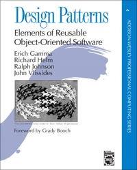
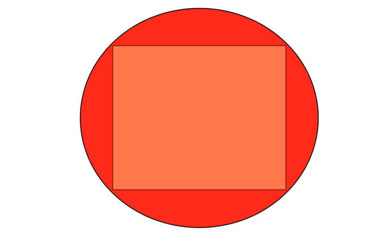

Design Patterns
Welcome
Who am I?
Why am I here?
Please ask questions!
Why are Design Patterns?
- Express solutions to common problems
- Provide a higher level of abstraction when talking about code
- To discuss, weigh and record design tradeoffs
Some motivating quotes
Programs must be written for people to read, and only incidentally for machines to execute.
H. Abelson and G. Sussman, 1985
Computer Science is a science of abstraction - creating the right model for a problem and devising the appropriate mechanizable techniques to solve it.
A. Aho and J. Ullman, 1992
A metaphor from architecture
The keystone pattern
Provides a solution to a common requirement for getting an arch to bear weight
It's an old idea
That's stood the test of time

In many contexts
And it can be applied in a general way
Generalizations
It describes a general class of solution to a problem
Allows you to benefit from the wisdom of many previous designers
When were they first popularized?
When were they first popularized?
- Code Complete - 1993 - Steven C. McConnell
- Elements of Reusable Object-Oriented Software - 1994 - Erich Gamma, Richard Helm, Ralph Johnson, John Vlissides
Referred to as the Gang of Four (Gof)
Classic textbooks!
Before you think this is ancient history, remember Ruby appeared only a year or two later
Key takeaways
- Program to an interface not an implementation
- Favour object composition over class inheritance
Important Nouns
- Class
- Object
- Interface
A quick (re)cap
Classes encapsulate functionality
class Greeter def initialize(name) @name = name end def greet "Hello, #{name}" end end
A quick recap
Objects can be instantiated from classes
greeter = SayHello.new("Mary-Anne")
A quick recap
Interface describes the set of behaviours the object exhibits
greeter = SayHello.new("Mary-Anne") greeter.greet # => Hello, Mary-Anne
The Classic Patterns
The GoF book introduces 23 classic software patterns:
Abstract Factory Builder Factory method Prototype Singleton Adapter Bridge Composite Decorator Facade Flyweight Proxy Chain of Responsibility Command Interpretor Iterator Mediator Memento Observer State Strategy Template method Visitor
Another abstraction
In general, there are only a few classes of patterns:
- Creational
- Behavioural
- Structural
- Concurrency-related
We'll look at a few patterns
…and their implementation in Ruby
- A behavioural pattern (Iterator)
- Two structural patterns (Adapter, Decorator)
What is this?
Where would you see it?
A common understanding
A shared understanding of a situation saves confusion and effort don't need to worry about the details
It's a collection
Interating with it calls for an Iterator
"Provide a way to access the elements of an aggregate object sequentially without exposing its underlying representation."
Iterators are everywhere
- Fetching lines from a file
- Fetching rows from a database
- Fetching bytes from a network socket
- Processing elements in a sequence
A simple iterator
class ArrayIterator def initialize(array) @array = array @index = 0 end def has_next? @index < @array.length end def next value = @array[@index] @index += 1 value end end
array = ['red', 'green', 'blue'] i = ArrayIterator.new(array) while i.has_next? puts("item: #{i.next}") end
What will this return?
Iterator returns
# => item: red # => item: green # => item: blue
Programming to an interface
As an advantage of Ruby's flexible dynamic typing, the array iterator will work with any aggregate class that has a length method and array index accessor.
Strings have both.
i = ArrayIterator.new('abc') while i.has_next? puts("item: #{i.next.chr}") end
# => item: a # => item: b # => item: c
A ticket iterator
class TicketIterator def initialize(tickets_count) @tickets_count = tickets_count @current_ticket = 0 end def next @current_ticket += 1 if @current_ticket <= @tickets_count "A#{@current_ticket}" else raise StopIteration end end end
iter = TicketIterator.new(10) loop do puts iter.next end # => A1 # => A2 # => A3 # => ...
Termination
When iteration is finished, it returns a StopIteration exception
Although we're raising an exception for a normal-case event, it makes the client code which consumes the iterator very simple
loop do print iterator.next end
Built-in iterators
Ruby's in-build collection classes can return iterators
Ruby calls these enumerators, but they're the same thing
class AdvancedTicketDispenser def initialize(total_tickets) @letters = ('A'..'Z').to_enum @numbers = (1..total_tickets).to_enum end def next "#{@letters.next}#{@numbers.next}" end end
dispenser = AdvancedTicketDispenser.new(5) loop do dispenser.next end # => A1 # => B2 # => C3 # => ...
Favour composition
Our iterator makes use of exiting objects to achieve its goals. We don't need to subclass a parent iterator to get the behaviour we desire.
Two iterators are combined into one ticket iterator that drives both simultaneously.
Internal Iterators
def for_each_element(array) i = 0 while i < array.length yield(array[i]) i += 1 end end
Procs and Yield
The proc defines a block of code with one argument (elem).
This proc is called with each element in the array by the while loop.
Yield passes control to the proc to allow it to process the element.
An internal iterator
class TicketInternalDispenser def initialize(total_tickets) @total_tickets = total_tickets end def each current_ticket = 0 while current_ticket < @total_tickets current_ticket += 1 yield current_ticket end end end
t = TicketInternalDispenser.new(10) t.each do |x| puts x end
Internal vs External iterators
External iterators are driven by the client calling next
Internal iterators push the the elements to the client
Ruby Mixins
Mixins allow you to incorporate functionality into your class
The Enumerable module contains all the functionality required to create an external iterator from your internal iterator
It also provides a host of other useful methods
Enumerable
class SimpleTicketEnumerable include Enumerable def initialize(total_tickets) @total_tickets = total_tickets end def each (1..@total_tickets).each { |x| yield x } end end
te = SimpleTicketEnumerable(3) te.each do |ticket| puts ticket end # => 1 2 3 enumerator = te.to_enum enumerator.next # => 1 enumerator.next # => 2
Other useful methods
enumerator.peek # => 3 enumerator.next # => 3 enumerator.rewind enumerator.next #=> 1
Adapters
Adapters are everywhere!
Adapters are everywhere!
Examples of adapters
Convert the interface of a class into another interface clients expect
Adapter lets classes work together that couldn't otherwise because of incompatible interfaces
Let's square the circle
Square Peg in a Round Hole
class SquarePeg attr_reader :width def initialize(width) @width = width end end class RoundPeg attr_reader :radius def initialize(radius) @radius = radius end end class RoundHole def initialize(radius) @radius = radius end def peg_fits?(peg) peg.radius <= radius end end
Does it fit?
round_hole = RoundHole.new(10) round_peg = RoundPeg.new(8) round_hole.peg_fits?(round_peg) # => true square_peg = SquarePeg.new(8) round_hole.peg_fits?(square_peg) # => NoMethodError: undefined method `radius' for #<SquarePeg:0x007ff9f108fb68 @width=8>
Square Peg in a Round Hole
Square Peg Adaptor
class SquarePegAdaptor def initialize(square_peg) @peg = square_peg end def radius Math.sqrt(((@peg.width / 2) ** 2) * 2) end end
Testing our adaptor
round_hole = RoundHole.new(4.0) 4.upto(7) do |i| peg = SquarePegAdaptor.new(SquarePeg.new(i)) puts "Square peg of size #{i} fits: #{round_hole.peg_fits?(peg)}" end
# Square peg of size 4 fits: true # Square peg of size 5 fits: true # Square peg of size 6 fits: false # Square peg of size 7 fits: false
Is there another way?
Yes, since Ruby allows all classes to be extended at any time.
class SquarePeg def radius Math.sqrt(((@peg.width / 2) ** 2) * 2) end end
We can take the method from our adapter and insert it directly into the adapted class.
Monkey-Patching
Example use cases
Database connection adapters. Ideally we don't want to be concerned with the implementation details of diverse databases. We'd like to query, update and delete.
ActiveRecord::ConnectionAdapters::MysqlAdapter ActiveRecord::ConnectionAdapters::PostgreSQLAdapter ActiveRecord::ConnectionAdapters::SQLiteAdapter
There is also an AbstractAdapter, which serves as the base class for each specific adapter. The AbstractAdapter implements common functionality found in most databases that is customized by its subclasses.
Sometimes core objects are inconsistent
require 'date' time = Time.now # => 2014-11-05 04:40:09 +0000 time.to_i # => 1415162421 date = DateTime.now # => #<DateTime: 2014-11-05T04:41:03+00:00 ((2456967j,16863s,932662000n),+0s,2299161j)> date.to_i # => NoMethodError: undefined method `to_i' for # #<DateTime:0x007fc0e10378a8>
Add method to DateTime
Rails achieves this by reopening the class and monkey-patching
class DateTime def to_i seconds_since_unix_epoch.to_i end def seconds_since_unix_epoch (jd - 2440588) * 86400 - offset_in_seconds + seconds_since_midnight end def offset_in_seconds (offset * 86400).to_i end def seconds_since_midnight sec + (min * 60) + (hour * 3600) end end
date = DateTime.now # => #<DateTime: 2014-11-05T04:42:14+00:00 ((2456967j,16934s,569780000n),+0s,2299161j)> date.to_i # => 1415162534
With power comes responsibility
Ruby offers dynamic and flexible altives to the standard design patterns
You should use them with caution
Decorator
Decorator

What is it?
A way to wrap the behaviour of an object. The Decorator pattern also allows you to layer features atop one another so that you can construct objects that have exactly the right set of capabilities that you need for any given situation.
The pattern is designed so that multiple decorators can be stacked on top of each other.
How to use it
We have a component implementing some behaviour.
In this example we have writeline and close methods.
class SimpleWriter def initialize(path) @file = File.open(path, 'w') end def write_line(line) @file.print(line) @file.print("\n") end def close @file.close end end
The Decorator
class NumberingWriter def initialize(real_writer) @real_writer = real_writer @line_number = 1 end def write_line(line) @real_writer.write_line("#{@line_number}: #{line}") @line_number += 1 end def close @real_writer.close end end
And we have an example decorator. This takes the object to be decorated as its initialization parameter.
It implements the method(s) to be decorated, but calls its underlying real writer implementation.
Usage
writer = NumberingWriter.new(SimpleWriter.new('test.txt')) writer.write_line('Hello there') writer.write_line("Goodbye") writer.close
# 1: Hello there # 2: Goodbye
Other use cases
Very popular in web development where you want to compose together behaviours to process a request/response cycle.
Library called Rack defines a very simple decorator pattern which is iused by many of the Ruby web frameworks.
use Rack::Lock use ActionController::Failsafe use ActionController::Reloader use ActionController::Session::CookieStore, #<Proc:0x01b90eb4@(eval):8> use ActionController::RewindableInput use ActionController::ParamsParser use Rack::MethodOverride use Rack::Head use ActiveRecord::ConnectionAdapters::ConnectionManagement use ActiveRecord::QueryCache run ActionController::Dispatcher.new
In Summary
- Design patterns are desciptions of general solutions to common problems
- They provide a level of abstraction for thinking about software design
- They do not dictate a paticular implementation
- In many cases, Ruby's dynammic nature allows for an alternative implementation
Questions?
Slides available http://github.com/henrygarner/design-patterns.git
Homework
Use any of the three design patterns to we have discussed to:
- Iterate over a collection
- Apply a decorator chain
- Supply an adapter to cater for multiple collection types
For example:
- Loop over the lines in "/usr/share/dict/words"
- Reverse all the words
- Filter out words beginning (ending) with 'g'
- Flip the words back again
- Create a proxy that allows the iterator to work on String as well as File objects